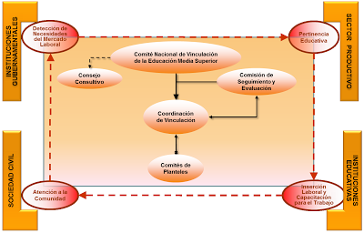

Centro de Bachillerato Tecnológico industrial y de servicios No.16

 8
8-
CBTis No.16
Se muestra información del plantel
-
Historia del plantel
Se muestra la Historia
-
Ofertas Educativas
Se explica las Ofertas Educativas
-
Docentes
Muestra las fechas importantes
-
Servicios escolares
Se muestras los servicios que ofrece el plantel
-
Estudiantes
Se muestra el papel de los estudiantes
-
Ubicación
Se muestra la ubicación de la escuela
-
Contáctanos...
Comunícate con nosotros
-
Elaborado por...
Se muestras la información del elaborador
CBTis No.16
Depto. Vinculación CBTis 16
Proceso que permite establecer relaciones entre el sector productivo e instituciones de educación y la sociedad, con el objeto de atender necesidades mutuas a través de la participación de todos los actores involucrados en un proceso integral que genere mecanismos de interacción, así como la retroalimentación de los programas de formación de recursos humano, para beneficio del país y el mejoramiento continuo de cada institución.
1. Organizar, coordinar y supervisar las actividades encaminadas a vincular la educación tecnológica con el sector productivo de bienes y servicios, de acuerdo con los lineamientos establecidos por la Dirección General de Educación Tecnológica Industrial.
2.Formular el programa anual de vinculación y proponerlo a la Subdirección Técnica para lo conducente.
3. Integrar el cuadro de necesidades de recursos humanos, financieros y materiales requeridos para el cumplimiento de las labores encomendadas al departamento y presentarlo a la Subdirección Técnica para lo conducente.
4. Elaborar diagnósticos socioeconómicos del área de influencia del plantel y jerarquizar las necesidades de bienes y servicios para determinar su atención.
5. Participar con la dirección del plantel en la celebración de convenios de vinculación del plantel con el sector productivo de bienes y servicios de la región y realizar su seguimiento.
6. Solicitar a la Subdirección Técnica, la participación del personal docente y técnico que se requiera en las acciones de vinculación.
7. Participar en los programas de capacitación y actualización del personal docente y técnico encargado de la vinculación con el sector productivo de bienes y servicios.
8. Establecer y mantener coordinación con instituciones y dependencias que tengan injerencia con el sector productivo de bienes y servicios de la región, a fin de apoyar el programa de vinculación del plantel.
9. Apoyar las acciones encaminadas al desarrollo de las prácticas profesionales y a la prestación del servicio social de los alumnos.
10. Registrar el avance y cumplimiento de los proyectos de vinculación que realice el plantel.
11. Promover y apoyar las acciones tendientes a fortalecer los vínculos de los alumnos, egresados y docentes, con los sectores empresarial, público o privado de la región.
12. Promover el establecimiento de auto-empresas que fortalezcan la infraestructura de la localidad con egresados de las diversas especialidades o carreras que se imparten en el plantel.
13. Promover que las especialidades o carreras que se imparten en el plantel, coadyuven al desarrollo del aparato productivo y de servicios de la región.
14. Participar en el diseño de los proyectos de investigación académica, pedagógica y de experimentación educativa, vinculadas con el sector productivo de bienes y servicios.
15. Diseñar los proyectos de convenios suscritos por el director del plantel y el sector productivo de bienes y servicios.
16. Coadyuvar al cumplimiento de convenios y contratos generales, suscritos entre la Dirección General de Educación Tecnológica Industrial y el sector productivo de bienes y servicios.
17. Proponer a la Subdirección Técnica, acciones orientadas al mejoramiento de la vinculación entre el plantel y el sector productivo de bienes y servicios.
18. Coordinar y supervisar la realización de estudios del mercado ocupacional en la región, que contribuyan a la promoción laboral de los egresados del plantel.
19. Organizar, coordinar y evaluar el seguimiento de egresados del plantel y el desarrollo de acciones encaminadas a mantener su estrecha relación.
20. Proporcionar, en los términos y plazos establecidos, la información que le sea requerida por la Subdirección Técnica.
21. Expedir las constancias de cumplimiento de prácticas a los alumnos del plantel.
22. Apoyar las actividades de promoción del plantel para la captación de alumnos de nuevo ingreso.
23. Participar en la elaboración del programa operativo anual y el anteproyecto del presupuesto de acuerdo con las normas y procedimientos establecidos por la Dirección General de Educación Tecnológica Industrial.
24. Mantener comunicación con las demás áreas del plantel para el mejor desempeño de sus funciones.



 3
3 5
5 8
8